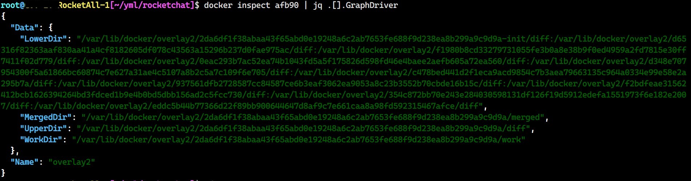

Docker Image 介紹
Contents

此篇筆記主要參考 Docker 官方文件 About storage drivers
主要記錄自己找到的資料，所以不是很有系統性的教學。不過文內有附上邱宏瑋 (hwchiu) 鐵人賽系列文章，需要完整學習的可以去拜讀 <(__)>
image 是運行 container 不可或缺的存在，它是容器的基底。
開始之前
在開始之前我覺得有必要釐清一下名詞，避免大家誤以為…
(1) 容器技術是 Docker 的專利。
(2) Docker Image 是 Docker 制定的且特規。
會有這些現象是因為 Docker 簡化了 containerization (容器化) 的繁雜步驟，讓容器化更加親民、易於使用。
I promise
To say container registries rather than docker registries
I promise
To say container images rather than docker images
I promise
To say containers or OCI containers rather than docker containers
誓詞取自 Cloud Native Taiwan User Group 小飛機大大 <(__)>
[Day2] 淺談 Container 實現原理, 以 Docker 為例(I)
【簡體中文】走进docker(02)：image(镜像)是什么？
Images and layers
基本觀念
- 一個 Docker image 是由一系列的 “層” (layer) 堆疊而成
- Dockerfile 當中每一個指令都會生成一個 layer
- 每個 layer 都是唯讀 (read-only) 的
- 承上，image 是由 layer 堆疊而成，所以 image 也是唯讀 (read-only)
範例
|
|
這個範例包含了 4 個指令 (所以 image 會有 4 個 layers)。
FROM 選擇 base image，以這個 dockerfile 來說就是選擇使用 ubuntu:18.04 作為基底。
COPY 將當前工作目錄 (PWD) 所有檔案複製到 /app 路徑底下。
RUN 執行指令，以上面範例來說就是在 /app 下執行 make 這個指令 (make 是編譯相關指令)。
CMD 定義當這個 image 被執行 (變成 container) 後要執行什麼指令。
Q: 我可以用多個 FROM 嗎?
Ans: 可以，請參考 Use multi-stage builds
container layers diagram

當我們把一個 docker image run 起來變成一個 container 後，整個 container layer 會是這樣。
> 可寫層 (writable layer) 會被加在最上層，這也是為什麼 docker container 是可以寫入資料的原因 (假設沒有外掛任何 volume)
> 所有你認為異動到系統 (例如 vim /etc/yum.conf) 實際上都是在可寫層刪減，原因: image 是 read only
> 也因為可寫層是在 container 內，生命週期 (life cycle) 也跟著容器。當下達 docker rm <container_name> 可寫層資料隨即消失
> 可寫層採用 copy-on-write (CoW) 策略，(跨 layer) 下達檔案刪除指令 (例如 rm -f /etc/yum.conf) 實際上會增加 container 實際占用硬碟的空間
關於 CoW 這篇有實驗: 关于base镜像
多個 container 共用同一個 image

這個是 container 技術比起傳統虛擬化 (virtualization) 技術省空間的原因之一，硬碟占用一份 image 的空間，就可以跑出好幾個彼此獨立的環境
沒感覺? 來下個指令吧!
列出所有 running container 占用硬碟的空間 (P.S. 為了方便，省略中間不重要的欄位)
|
|
|
|
size 顯示可寫層 (wirtalbe) 實際占用硬碟空間
virtual size 唯讀且共用的 image 加上可寫層使用空間。(image size + writable size)
docker pull
docker pull <some_image> 執行時其實不是將整個 image 完全 抓下來，而是分層抓取。
(一個 layer 一個 layer 抓，假設 local 有就不向 docker hub 抓取，以節省空間)
查看 centos:7 這個 image 裡面包含了多少 layer
|
|
|
|
這些 layer 實際上是儲存在這些目錄裡面:
/var/lib/docker/image/overlay2/layerdb/sha256/
/var/lib/docker/image/overlay2/distribution/v2metadata-by-diffid/sha256/
|
|
為什麼 Image ID 與 Digest 不同
透過指令可以查看一個 image 的 Image ID 與 DIGEST
|
|
簡而言之:
Digest 是對 manifest 做 hash，目前 docker registry v2 使用的 hash method 是 sha256
Image ID 是對 local image 的 JSON configure file 做 hash
有興趣的這篇有使用 python 抓取 manifest 的實驗，可以深入研究參考 YHWXQ简简单单的生活-Docker的Pull Digest和Image ID
What’s the difference between a Docker image’s Image ID and its Digest?
對於 docker image 想要更深入探索的，這邊有個用 Go 寫的工具，可以視覺化每一層的變化
wagoodman/dive

sf/centos_7 Dockerfile
2022.09.12 順便更新: 這個單純練習 Dockerfile, build image 的方式。正式環境不建議把 docker image 完全當作 VM 使用，查找工具應該獨立使用額外的 container
例如:
這是針對公司環境打造的 Docker image 基於 centos:7 加入了一些常用 debug 查找工具~
也因為加入了這些工具，弄得比官方原生 centos:7 還大包….
官方 centos:7 只有 204 MB，單純這些工具就有 292 MB XD
單純嘗試寫 Dockerfile，所以就沒特別去找瘦身方式囉!
|
|
|
|
Use the OverlayFS storage driver
不想看廢話的請直接挑過這邊。 2022.09.12 新增的章節
這次 HA Rocket 升級後發生 Docker overlay2 merged (由df -Th查看) 將整個儲存空間吃滿的情況
與之前由 log 吃滿的情形不一樣，章節因此誕生!
官方 document Use the OverlayFS storage driver

▲ 圖片來源 Docker OverlayFS 架構圖。
OverlayFS 是一個現代化的 union filesystem (洋蔥檔案系統)，比起 AUFS 有更好的效能。 Docker 提供兩種 storage driver: overlay, overlay2
使用 overlay2 Linux kernel 必須高於 version 4.0, RHEL/CentOS 必須高於 version 3.10.0-514。
一句話講完: OverlayFS 將 lowerdir 與 upperdir 兩個 directory 呈現為單一一個 merged (也就是我們 df -Th 看到的 mount point)
container layer 又稱作可寫層，如果容器中有 App 持續對可寫層寫入、刪除 imager layer，就會導致 /var/lib/docker/overlay2/ 目錄吃滿硬碟空間。
如果是 log 過大造成的，則會使 /var/lib/docker/containers/<id>/xxx-json.log 檔案吃滿硬碟空間。

▲ 使用 docker inspect <id> | jq .[].GraphDriver 能夠查看一個 container 的 overlay 相關目錄與資訊。
同場加映 Docker - View logs for a container or service
View logs for a container or service
docker logs 指令會從 container 內的 STDOUT 或者 STDERR 這兩個 I/O stream 抓取 data 作為 log。 若沒有設定好 log driver，很可能會造成 log file 過大吃滿儲存空間的情形。
可以參考 Configure logging drivers 調整達到 logroate 的目的。
參考資料
Author
LastMod 2022-09-12 (7f56b26)